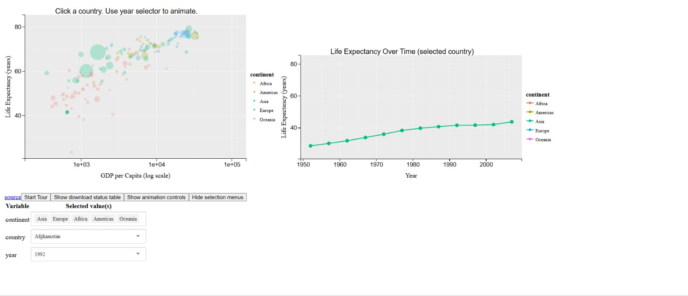
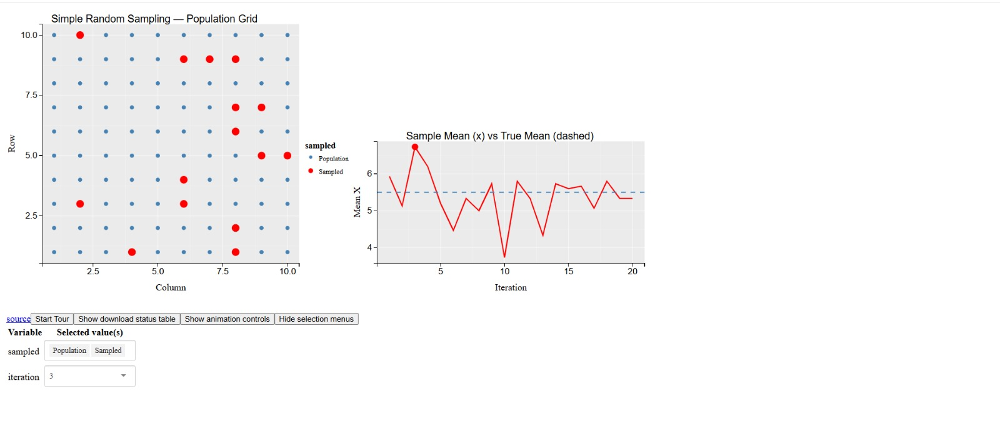
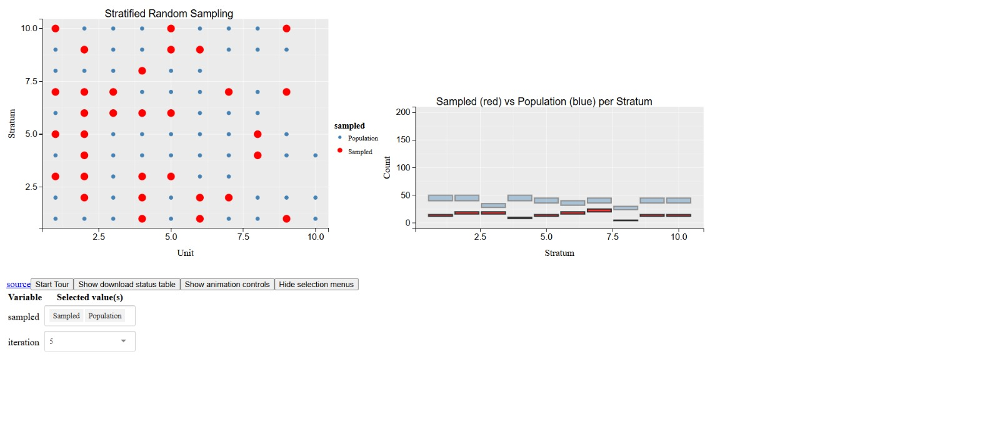

Data visualizations created using the R package animint2 for GSoC 2026.
| Screenshot | Title | Links |
|---|---|---|
 |
Gapminder: GDP vs Life Expectancy | Interactive Demo source |
 |
Simple Random Sampling | Interactive Demo source |
 |
Stratified Random Sampling | Interactive Demo source |